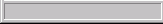
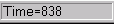
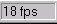
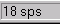

The interface is presented as a number of forms or windows. This section describes the main form.
Statusbar
The statusbar displays information for the user:
-  Information Panel
- Displays information about the current state of the simulation.
-  Tick Panel
- Displays the number of ticks (time steps) through which the simulation has proceeded. See the model documentation for the definition of a tick.
-  Framerate Panel
- Indicates the rate at which frames are being shown in fps=frames per second or fpm=frames per minute. Use the menu items View|Increase/Decrease Framerate to change this value.
-  Tickrate Panel
- Indicates how quickly the simulation is proceeding, in tps=ticks per second or tpm ticks per minute. Decreasing the framerate releases more processing power for the simulation, potentially increasing the tickrate.
- Size Grip
- Use the size grip to adjust the size of the form, and therefore, the view portal.
The user may also doubleclick the statusbar to toggle display of the view portal. This is equivalent to adjusting the size of the form with the sizegrip.